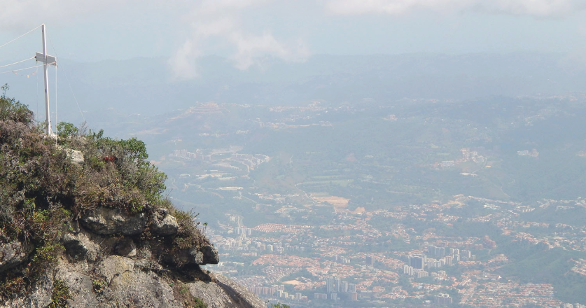
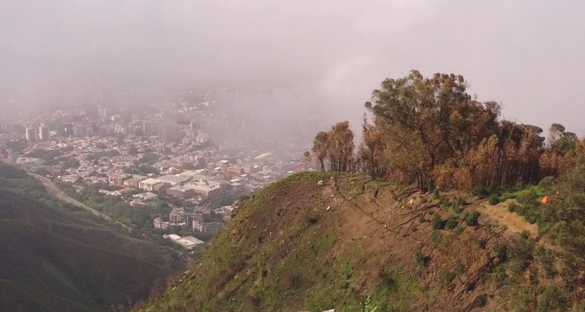

4,6km • Est. 7h 30min
Cupos disponibles: 18
Variante menos conocida pero igualmente histórica de la ruta tradicional de Semana Santa. Este sendero alternativo se adentra por zonas boscosas más densas y pendientes pronunciadas, ofreciendo una experiencia más íntima con la naturaleza. El punto culminante es un mirador secreto con vistas al valle de Caracas y al Cerro El Ávila en su esplendor.